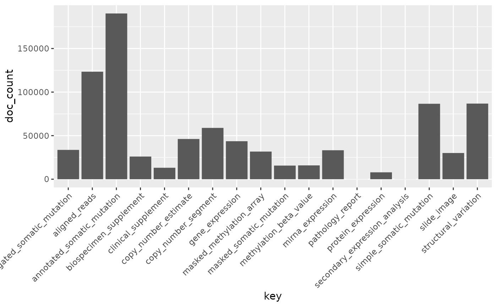

The GenomicDataCommons Package
Sean Davis & Martin Morgan
Thursday, November 08, 2018
Source:vignettes/overview.Rmd
overview.RmdAbstract
The National Cancer Institute (NCI) has established the Genomic Data Commons (GDC). The GDC provides the cancer research community with an open and unified repository for sharing and accessing data across numerous cancer studies and projects via a high-performance data transfer and query infrastructure. The GenomicDataCommons Bioconductor package provides basic infrastructure for querying, accessing, and mining genomic datasets available from the GDC. We expect that the Bioconductor developer and the larger bioinformatics communities will build on the GenomicDataCommons package to add higher-level functionality and expose cancer genomics data to the plethora of state-of-the-art bioinformatics methods available in Bioconductor.What is the GDC?
From the Genomic Data Commons (GDC) website:
The National Cancer Institute’s (NCI’s) Genomic Data Commons (GDC) is a data sharing platform that promotes precision medicine in oncology. It is not just a database or a tool; it is an expandable knowledge network supporting the import and standardization of genomic and clinical data from cancer research programs. The GDC contains NCI-generated data from some of the largest and most comprehensive cancer genomic datasets, including The Cancer Genome Atlas (TCGA) and Therapeutically Applicable Research to Generate Effective Therapies (TARGET). For the first time, these datasets have been harmonized using a common set of bioinformatics pipelines, so that the data can be directly compared. As a growing knowledge system for cancer, the GDC also enables researchers to submit data, and harmonizes these data for import into the GDC. As more researchers add clinical and genomic data to the GDC, it will become an even more powerful tool for making discoveries about the molecular basis of cancer that may lead to better care for patients.
The data model for the GDC is complex, but it worth a quick overview and a graphical representation is included here.

The data model is encoded as a so-called property graph. Nodes represent entities such as Projects, Cases, Diagnoses, Files (various kinds), and Annotations. The relationships between these entities are maintained as edges. Both nodes and edges may have Properties that supply instance details.
The GDC API exposes these nodes and edges in a somewhat simplified set of RESTful endpoints.
Quickstart
This quickstart section is just meant to show basic functionality. More details of functionality are included further on in this vignette and in function-specific help.
This software is available at Bioconductor.org and can be downloaded via BiocManager::install.
To report bugs or problems, either submit a new issue or submit a bug.report(package='GenomicDataCommons') from within R (which will redirect you to the new issue on GitHub).
Installation
Installation can be achieved via Bioconductor’s BiocManager package.
Check connectivity and status
The GenomicDataCommons package relies on having network connectivity. In addition, the NCI GDC API must also be operational and not under maintenance. Checking status can be used to check this connectivity and functionality.
## $commit
## [1] "acaf65369f6cea8337c6b59f0888761c9ed34654"
##
## $data_release
## [1] "Data Release 13.0 - September 27, 2018"
##
## $status
## [1] "OK"
##
## $tag
## [1] "1.17.1"
##
## $version
## [1] 1And to check the status in code:
Find data
The following code builds a manifest that can be used to guide the download of raw data. Here, filtering finds gene expression files quantified as raw counts using HTSeq from ovarian cancer patients.
ge_manifest = files() %>%
filter( cases.project.project_id == 'TCGA-OV') %>%
filter( type == 'gene_expression' ) %>%
filter( analysis.workflow_type == 'HTSeq - Counts') %>%
manifest()
head(ge_manifest)## # A tibble: 6 x 5
## id filename md5 size state
## <chr> <chr> <chr> <int> <chr>
## 1 1c710ed8-4e82-48… 85fe5749-1fef-49a2-bbac… c89b3cb3cfea61… 260506 relea…
## 2 66099894-b6d2-42… b4f37e7b-e458-4395-a204… 16aa831b655c07… 262493 relea…
## 3 23bebeda-8b5f-49… 98e7898a-bd2e-4c49-9f76… bcdca52c835a42… 252465 relea…
## 4 67270205-5ba8-41… df06bca2-4481-455f-98b2… 878aed6fb06164… 257505 relea…
## 5 1c07df73-e470-47… 538a1fe4-8e69-4a29-a789… fde6a9c9c4b140… 250971 relea…
## 6 a522b6f3-0869-45… 61b6a3de-8bb2-4fc1-85d9… 0c6b86b8e0e8c4… 260840 relea…Download data
After the 379 gene expression files specified in the query above. Using multiple processes to do the download very significantly speeds up the transfer in many cases. On a standard 1Gb connection, the following completes in about 30 seconds. The first time the data are downloaded, R will ask to create a cache directory (see ?gdc_cache for details of setting and interacting with the cache). Resulting downloaded files will be stored in the cache directory. Future access to the same files will be directly from the cache, alleviating multiple downloads.
If the download had included controlled-access data, the download above would have needed to include a token. Details are available in the authentication section below.
Metadata queries
Clinical data
Accessing clinical data is a very common task. Given a set of case_ids, the gdc_clinical() function will return a list of four tibbles.
- demographic
- diagnoses
- exposures
- main
## [1] "demographic" "diagnoses" "exposures" "main"## # A tibble: 6 x 8
## updated_datetime submitter_id id disease_type created_datetime state
## <chr> <chr> <chr> <chr> <chr> <chr>
## 1 2018-08-07T05:0… AD3978 4033… Adenomas an… 2017-06-01T09:3… rele…
## 2 2018-08-07T05:0… AD14467 c8a4… Not Reported 2017-06-01T08:5… rele…
## 3 2018-08-07T05:0… AD17381 0b55… Squamous Ce… 2017-06-01T09:1… rele…
## 4 2018-08-07T05:0… AD11339 bcd7… Adenomas an… 2017-06-01T08:4… rele…
## 5 2018-08-07T05:0… AD3547 4304… Adenomas an… 2017-06-01T09:3… rele…
## 6 2018-08-07T05:0… AD15350 0946… Complex Mix… 2017-06-01T09:0… rele…
## # ... with 2 more variables: case_id <chr>, primary_site <chr>## # A tibble: 6 x 20
## case_id progression_or_… classification_… last_known_dise… tumor_grade
## <chr> <chr> <chr> <chr> <chr>
## 1 403380… not reported primary not reported not report…
## 2 c8a4f0… not reported metastasis not reported not report…
## 3 0b5511… not reported Unknown not reported not report…
## 4 bcd702… not reported primary not reported not report…
## 5 4304fe… not reported primary not reported not report…
## 6 0946a9… not reported metastasis not reported not report…
## # ... with 15 more variables: tissue_or_organ_of_origin <chr>,
## # created_datetime <chr>, updated_datetime <chr>,
## # primary_diagnosis <chr>, submitter_id <chr>,
## # site_of_resection_or_biopsy <chr>, tumor_stage <chr>, state <chr>,
## # age_at_diagnosis <int>, vital_status <chr>, morphology <chr>,
## # days_to_last_known_disease_status <lgl>, days_to_last_follow_up <lgl>,
## # days_to_recurrence <lgl>, diagnosis_id <chr>General metadata queries
The GenomicDataCommons package can access the significant clinical, demographic, biospecimen, and annotation information contained in the NCI GDC. The gdc_clinical() function will often be all that is needed, but the API and GenomicDataCommons package make much flexibility if fine-tuning is required.
expands = c("diagnoses","annotations",
"demographic","exposures")
clinResults = cases() %>%
GenomicDataCommons::select(NULL) %>%
GenomicDataCommons::expand(expands) %>%
results(size=50)
str(clinResults[[1]],list.len=6)## List of 50
## $ 403380bf-88f2-431b-b433-4161b6f47146:'data.frame': 1 obs. of 19 variables:
## ..$ progression_or_recurrence : chr "not reported"
## ..$ classification_of_tumor : chr "primary"
## ..$ last_known_disease_status : chr "not reported"
## ..$ tumor_grade : chr "not reported"
## ..$ tissue_or_organ_of_origin : chr "Rectum, NOS"
## ..$ created_datetime : chr "2017-06-16T15:51:29.940710-05:00"
## .. [list output truncated]
## $ c8a4f03a-bf88-4c05-8b0b-ee4370f7be5b:'data.frame': 1 obs. of 19 variables:
## ..$ progression_or_recurrence : chr "not reported"
## ..$ classification_of_tumor : chr "metastasis"
## ..$ last_known_disease_status : chr "not reported"
## ..$ tumor_grade : chr "not reported"
## ..$ tissue_or_organ_of_origin : chr "Not Reported"
## ..$ created_datetime : chr "2017-06-16T16:09:18.137246-05:00"
## .. [list output truncated]
## $ 0b55114d-f497-44c9-ab44-d671d4fc8217:'data.frame': 1 obs. of 19 variables:
## ..$ progression_or_recurrence : chr "not reported"
## ..$ classification_of_tumor : chr "Unknown"
## ..$ last_known_disease_status : chr "not reported"
## ..$ tumor_grade : chr "not reported"
## ..$ tissue_or_organ_of_origin : chr "Unknown"
## ..$ created_datetime : chr "2017-06-16T16:32:11.670330-05:00"
## .. [list output truncated]
## $ bcd70212-0f01-4c3a-bb8d-4b054e6d4f5e:'data.frame': 1 obs. of 19 variables:
## ..$ progression_or_recurrence : chr "not reported"
## ..$ classification_of_tumor : chr "primary"
## ..$ last_known_disease_status : chr "not reported"
## ..$ tumor_grade : chr "not reported"
## ..$ tissue_or_organ_of_origin : chr "Esophagus, NOS"
## ..$ created_datetime : chr "2017-06-16T15:50:50.640983-05:00"
## .. [list output truncated]
## $ 4304fe79-a1b4-4b5e-95d8-a340372f9cbd:'data.frame': 1 obs. of 19 variables:
## ..$ progression_or_recurrence : chr "not reported"
## ..$ classification_of_tumor : chr "primary"
## ..$ last_known_disease_status : chr "not reported"
## ..$ tumor_grade : chr "not reported"
## ..$ tissue_or_organ_of_origin : chr "Esophagus, NOS"
## ..$ created_datetime : chr "2017-06-16T15:53:20.454258-05:00"
## .. [list output truncated]
## $ 0946a9c1-d7a8-4e85-89a9-8ba47fde4f1b:'data.frame': 1 obs. of 19 variables:
## ..$ progression_or_recurrence : chr "not reported"
## ..$ classification_of_tumor : chr "metastasis"
## ..$ last_known_disease_status : chr "not reported"
## ..$ tumor_grade : chr "not reported"
## ..$ tissue_or_organ_of_origin : chr "Gastrointestinal tract, NOS"
## ..$ created_datetime : chr "2017-06-16T16:21:20.304647-05:00"
## .. [list output truncated]
## [list output truncated]Basic design
This package design is meant to have some similarities to the “hadleyverse” approach of dplyr. Roughly, the functionality for finding and accessing files and metadata can be divided into:
- Simple query constructors based on GDC API endpoints.
- A set of verbs that when applied, adjust filtering, field selection, and faceting (fields for aggregation) and result in a new query object (an endomorphism)
- A set of verbs that take a query and return results from the GDC
In addition, there are exhiliary functions for asking the GDC API for information about available and default fields, slicing BAM files, and downloading actual data files. Here is an overview of functionality1.
- Creating a query
- Manipulating a query
- Introspection on the GDC API fields
- Executing an API call to retrieve query results
- Raw data file downloads
- Summarizing and aggregating field values (faceting)
- Authentication
- BAM file slicing
Usage
There are two main classes of operations when working with the NCI GDC.
- Querying metadata and finding data files (e.g., finding all gene expression quantifications data files for all colon cancer patients).
- Transferring raw or processed data from the GDC to another computer (e.g., downloading raw or processed data)
Both classes of operation are reviewed in detail in the following sections.
Querying metadata
Vast amounts of metadata about cases (patients, basically), files, projects, and so-called annotations are available via the NCI GDC API. Typically, one will want to query metadata to either focus in on a set of files for download or transfer or to perform so-called aggregations (pivot-tables, facets, similar to the R table() functionality).
Querying metadata starts with creating a “blank” query. One will often then want to filter the query to limit results prior to retrieving results. The GenomicDataCommons package has helper functions for listing fields that are available for filtering.
In addition to fetching results, the GDC API allows faceting, or aggregating,, useful for compiling reports, generating dashboards, or building user interfaces to GDC data (see GDC web query interface for a non-R-based example).
Creating a query
A query of the GDC starts its life in R. Queries follow the four metadata endpoints available at the GDC. In particular, there are four convenience functions that each create GDCQuery objects (actually, specific subclasses of GDCQuery):
The pquery object is now an object of (S3) class, GDCQuery (and gdc_projects and list). The object contains the following elements:
- fields: This is a character vector of the fields that will be returned when we retrieve data. If no fields are specified to, for example, the
projects()function, the default fields from the GDC are used (seedefault_fields()) - filters: This will contain results after calling the
filter()method and will be used to filter results on retrieval. - facets: A character vector of field names that will be used for aggregating data in a call to
aggregations(). - archive: One of either “default” or “legacy”.
- token: A character(1) token from the GDC. See the authentication section for details, but note that, in general, the token is not necessary for metadata query and retrieval, only for actual data download.
Looking at the actual object (get used to using str()!), note that the query contains no results.
## List of 5
## $ fields : chr [1:10] "dbgap_accession_number" "disease_type" "intended_release_date" "name" ...
## $ filters: NULL
## $ facets : NULL
## $ legacy : logi FALSE
## $ expand : NULL
## - attr(*, "class")= chr [1:3] "gdc_projects" "GDCQuery" "list"Retrieving results
[ GDC pagination documentation ]
With a query object available, the next step is to retrieve results from the GDC. The GenomicDataCommons package. The most basic type of results we can get is a simple count() of records available that satisfy the filter criteria. Note that we have not set any filters, so a count() here will represent all the project records publicly available at the GDC in the “default” archive"
## [1] 43The results() method will fetch actual results.
These results are returned from the GDC in JSON format and converted into a (potentially nested) list in R. The str() method is useful for taking a quick glimpse of the data.
## List of 9
## $ dbgap_accession_number: chr [1:10] NA NA NA NA ...
## $ disease_type :List of 10
## ..$ TCGA-SARC : chr [1:6] "Myomatous Neoplasms" "Soft Tissue Tumors and Sarcomas, NOS" "Fibromatous Neoplasms" "Lipomatous Neoplasms" ...
## ..$ TCGA-ACC : chr "Adenomas and Adenocarcinomas"
## ..$ TCGA-MESO : chr "Mesothelial Neoplasms"
## ..$ TCGA-READ : chr [1:2] "Cystic, Mucinous and Serous Neoplasms" "Adenomas and Adenocarcinomas"
## ..$ TARGET-CCSK: chr "Clear Cell Sarcoma of the Kidney"
## ..$ TARGET-AML : chr "Acute Myeloid Leukemia"
## ..$ TARGET-NBL : chr "Neuroblastoma"
## ..$ TCGA-LGG : chr "Gliomas"
## ..$ TCGA-STAD : chr [1:2] "Cystic, Mucinous and Serous Neoplasms" "Adenomas and Adenocarcinomas"
## ..$ TCGA-THCA : chr [1:2] "Epithelial Neoplasms, NOS" "Adenomas and Adenocarcinomas"
## $ releasable : logi [1:10] FALSE FALSE FALSE FALSE FALSE FALSE ...
## $ released : logi [1:10] TRUE TRUE TRUE TRUE TRUE TRUE ...
## $ state : chr [1:10] "open" "open" "open" "open" ...
## $ primary_site :List of 10
## ..$ TCGA-SARC : chr [1:13] "Corpus uteri" "Stomach" "Other and unspecified parts of tongue" "Other and unspecified male genital organs" ...
## ..$ TCGA-ACC : chr "Adrenal gland"
## ..$ TCGA-MESO : chr [1:2] "Heart, mediastinum, and pleura" "Bronchus and lung"
## ..$ TCGA-READ : chr [1:5] "Rectosigmoid junction" "Rectum" "Colon" "Unknown primary site" ...
## ..$ TARGET-CCSK: chr "Kidney"
## ..$ TARGET-AML : chr "Blood"
## ..$ TARGET-NBL : chr "Nervous System"
## ..$ TCGA-LGG : chr "Brain"
## ..$ TCGA-STAD : chr "Stomach"
## ..$ TCGA-THCA : chr "Thyroid gland"
## $ project_id : chr [1:10] "TCGA-SARC" "TCGA-ACC" "TCGA-MESO" "TCGA-READ" ...
## $ id : chr [1:10] "TCGA-SARC" "TCGA-ACC" "TCGA-MESO" "TCGA-READ" ...
## $ name : chr [1:10] "Sarcoma" "Adrenocortical Carcinoma" "Mesothelioma" "Rectum Adenocarcinoma" ...
## - attr(*, "row.names")= int [1:10] 1 2 3 4 5 6 7 8 9 10
## - attr(*, "class")= chr [1:3] "GDCprojectsResults" "GDCResults" "list"A default of only 10 records are returned. We can use the size and from arguments to results() to either page through results or to change the number of results. Finally, there is a convenience method, results_all() that will simply fetch all the available results given a query. Note that results_all() may take a long time and return HUGE result sets if not used carefully. Use of a combination of count() and results() to get a sense of the expected data size is probably warranted before calling results_all()
## [1] 10## [1] 43## [1] TRUEExtracting subsets of results or manipulating the results into a more conventional R data structure is not easily generalizable. However, the purrr, rlist, and data.tree packages are all potentially of interest for manipulating complex, nested list structures. For viewing the results in an interactive viewer, consider the listviewer package.
Fields and Values
Central to querying and retrieving data from the GDC is the ability to specify which fields to return, filtering by fields and values, and faceting or aggregating. The GenomicDataCommons package includes two simple functions, available_fields() and default_fields(). Each can operate on a character(1) endpoint name (“cases”, “files”, “annotations”, or “projects”) or a GDCQuery object.
## [1] "access" "acl"
## [3] "average_base_quality" "average_insert_size"
## [5] "average_read_length" "created_datetime"
## [7] "data_category" "data_format"
## [9] "data_type" "error_type"
## [11] "experimental_strategy" "file_autocomplete"
## [13] "file_id" "file_name"
## [15] "file_size" "imaging_date"
## [17] "magnification" "md5sum"
## [19] "mean_coverage" "origin"
## [21] "pairs_on_diff_chr" "platform"
## [23] "proportion_base_mismatch" "proportion_coverage_10X"
## [25] "proportion_coverage_30X" "proportion_reads_duplicated"
## [27] "proportion_reads_mapped" "proportion_targets_no_coverage"
## [29] "read_pair_number" "revision"
## [31] "state" "state_comment"
## [33] "submitter_id" "tags"
## [35] "total_reads" "type"
## [37] "updated_datetime"## [1] 700## [1] "access" "acl"
## [3] "analysis.analysis_id" "analysis.analysis_type"
## [5] "analysis.created_datetime" "analysis.input_files.access"The fields to be returned by a query can be specified following a similar paradigm to that of the dplyr package. The select() function is a verb that resets the fields slot of a GDCQuery; note that this is not quite analogous to the dplyr select() verb that limits from already-present fields. We completely replace the fields when using select() on a GDCQuery.
## [1] "aliquot_ids" "analyte_ids"
## [3] "case_autocomplete" "case_id"
## [5] "created_datetime" "days_to_index"
## [7] "days_to_lost_to_followup" "disease_type"
## [9] "index_date" "lost_to_followup"
## [11] "portion_ids" "primary_site"
## [13] "sample_ids" "slide_ids"
## [15] "state" "submitter_aliquot_ids"
## [17] "submitter_analyte_ids" "submitter_id"
## [19] "submitter_portion_ids" "submitter_sample_ids"
## [21] "submitter_slide_ids" "updated_datetime"# set up query to use ALL available fields
# Note that checking of fields is done by select()
qcases = cases() %>% GenomicDataCommons::select(available_fields('cases'))
head(qcases$fields)## [1] "case_id" "aliquot_ids"
## [3] "analyte_ids" "annotations.annotation_id"
## [5] "annotations.case_id" "annotations.case_submitter_id"Finding fields of interest is such a common operation that the GenomicDataCommons includes the grep_fields() function and the field_picker() widget. See the appropriate help pages for details.
Facets and aggregation
The GDC API offers a feature known as aggregation or faceting. By specifying one or more fields (of appropriate type), the GDC can return to us a count of the number of records matching each potential value. This is similar to the R table method. Multiple fields can be returned at once, but the GDC API does not have a cross-tabulation feature; all aggregations are only on one field at a time. Results of aggregation() calls come back as a list of data.frames (actually, tibbles).
# total number of files of a specific type
res = files() %>% facet(c('type','data_type')) %>% aggregations()
res$type## key doc_count
## 1 simple_somatic_mutation 63971
## 2 annotated_somatic_mutation 63536
## 3 aligned_reads 47248
## 4 copy_number_segment 45256
## 5 gene_expression 34713
## 6 slide_image 30072
## 7 biospecimen_supplement 25151
## 8 mirna_expression 22972
## 9 clinical_supplement 12496
## 10 methylation_beta_value 12359
## 11 aggregated_somatic_mutation 186
## 12 masked_somatic_mutation 132Using aggregations() is an also easy way to learn the contents of individual fields and forms the basis for faceted search pages.
Filtering
[ GDC filtering documentation ]
The GenomicDataCommons package uses a form of non-standard evaluation to specify R-like queries that are then translated into an R list. That R list is, upon calling a method that fetches results from the GDC API, translated into the appropriate JSON string. The R expression uses the formula interface as suggested by Hadley Wickham in his vignette on non-standard evaluation
It’s best to use a formula because a formula captures both the expression to evaluate and the environment where the evaluation occurs. This is important if the expression is a mixture of variables in a data frame and objects in the local environment [for example].
For the user, these details will not be too important except to note that a filter expression must begin with a “~”.
## [1] 358092To limit the file type, we can refer back to the section on faceting to see the possible values for the file field “type”. For example, to filter file results to only “gene_expression” files, we simply specify a filter.
qfiles = files() %>% filter( type == 'gene_expression')
# here is what the filter looks like after translation
str(get_filter(qfiles))## List of 2
## $ op : 'scalar' chr "="
## $ content:List of 2
## ..$ field: chr "type"
## ..$ value: chr "gene_expression"What if we want to create a filter based on the project (‘TCGA-OVCA’, for example)? Well, we have a couple of possible ways to discover available fields. The first is based on base R functionality and some intuition.
## [1] "analysis.input_files.proportion_base_mismatch"
## [2] "analysis.input_files.proportion_coverage_10X"
## [3] "analysis.input_files.proportion_coverage_30X"
## [4] "analysis.input_files.proportion_reads_duplicated"
## [5] "analysis.input_files.proportion_reads_mapped"
## [6] "analysis.input_files.proportion_targets_no_coverage"Interestingly, the project information is “nested” inside the case. We don’t need to know that detail other than to know that we now have a few potential guesses for where our information might be in the files records. We need to know where because we need to construct the appropriate filter.
## $cases.project.project_id
## key doc_count
## 1 FM-AD 36134
## 2 TCGA-BRCA 31523
## 3 TCGA-LUAD 17051
## 4 TCGA-UCEC 16173
## 5 TCGA-HNSC 15288
## 6 TCGA-OV 15165
## 7 TCGA-THCA 14420
## 8 TCGA-LUSC 15323
## 9 TCGA-LGG 14727
## 10 TCGA-KIRC 15090
## 11 TCGA-PRAD 14287
## 12 TCGA-COAD 14278
## 13 TCGA-GBM 11995
## 14 TCGA-SKCM 12724
## 15 TCGA-STAD 12845
## 16 TCGA-BLCA 11710
## 17 TCGA-LIHC 10814
## 18 TCGA-CESC 8594
## 19 TCGA-KIRP 8506
## 20 TCGA-SARC 7493
## 21 TCGA-PAAD 5306
## 22 TCGA-ESCA 5270
## 23 TCGA-PCPG 5034
## 24 TCGA-READ 4924
## 25 TCGA-TGCT 4281
## 26 TCGA-LAML 4178
## 27 TCGA-THYM 3444
## 28 TARGET-NBL 2805
## 29 TCGA-ACC 2546
## 30 TCGA-KICH 2324
## 31 TCGA-MESO 2338
## 32 TARGET-AML 2253
## 33 TCGA-UVM 2179
## 34 TCGA-UCS 1658
## 35 TARGET-WT 1406
## 36 TCGA-CHOL 1348
## 37 TCGA-DLBC 1228
## 38 NCICCR-DLBCL 957
## 39 TARGET-OS 65
## 40 TARGET-RT 297
## 41 CTSP-DLBCL1 89
## 42 TARGET-CCSK 15
## 43 VAREPOP-APOLLO 7We note that cases.project.project_id looks like it is a good fit. We also note that TCGA-OV is the correct project_id, not TCGA-OVCA. Note that unlike with dplyr and friends, the filter() method here replaces the filter and does not build on any previous filters.
qfiles = files() %>%
filter( cases.project.project_id == 'TCGA-OV' & type == 'gene_expression')
str(get_filter(qfiles))## List of 2
## $ op : 'scalar' chr "and"
## $ content:List of 2
## ..$ :List of 2
## .. ..$ op : 'scalar' chr "="
## .. ..$ content:List of 2
## .. .. ..$ field: chr "cases.project.project_id"
## .. .. ..$ value: chr "TCGA-OV"
## ..$ :List of 2
## .. ..$ op : 'scalar' chr "="
## .. ..$ content:List of 2
## .. .. ..$ field: chr "type"
## .. .. ..$ value: chr "gene_expression"## [1] 1137Asking for a count() of results given these new filter criteria gives r qfiles %>% count() results. Filters can be chained (or nested) to accomplish the same effect as multiple & conditionals. The count() below is equivalent to the & filtering done above.
qfiles2 = files() %>%
filter( cases.project.project_id == 'TCGA-OV') %>%
filter( type == 'gene_expression')
qfiles2 %>% count()## [1] 1137## [1] TRUEGenerating a manifest for bulk downloads is as simple as asking for the manifest from the current query.
## # A tibble: 6 x 5
## id filename md5 size state
## <chr> <chr> <chr> <int> <chr>
## 1 cfed68d7-e813-40… 39ae7d32-a9c6-4599-a860… 55acea1942d79e… 538202 relea…
## 2 8722050f-1538-4f… 60fdab7c-849a-440f-815a… 1e978e798adff3… 536021 relea…
## 3 583884ff-56f7-4f… 654acb8d-c1bb-42b1-91af… 30f00d467863fb… 577306 relea…
## 4 6ffe0d92-d1a4-48… 871da002-8649-42bc-8ce4… 917262f0abfaa2… 552115 relea…
## 5 9d39fdc2-6e24-41… 517d7f3f-2ea0-4452-a743… 657839aa0fdc23… 529572 relea…
## 6 d4d79084-9758-4f… 01770ca7-0c13-4078-b956… 9f6107df34f7db… 513662 relea…Note that we might still not be quite there. Looking at filenames, there are suspiciously named files that might include “FPKM”, “FPKM-UQ”, or “counts”. Another round of grep and available_fields, looking for “type” turned up that the field “analysis.workflow_type” has the appropriate filter criteria.
qfiles = files() %>% filter( ~ cases.project.project_id == 'TCGA-OV' &
type == 'gene_expression' &
analysis.workflow_type == 'HTSeq - Counts')
manifest_df = qfiles %>% manifest()
nrow(manifest_df)## [1] 379The GDC Data Transfer Tool can be used (from R, transfer() or from the command-line) to orchestrate high-performance, restartable transfers of all the files in the manifest. See the bulk downloads section for details.
Authentication
[ GDC authentication documentation ]
The GDC offers both “controlled-access” and “open” data. As of this writing, only data stored as files is “controlled-access”; that is, metadata accessible via the GDC is all “open” data and some files are “open” and some are “controlled-access”. Controlled-access data are only available after going through the process of obtaining access.
After controlled-access to one or more datasets has been granted, logging into the GDC web portal will allow you to access a GDC authentication token, which can be downloaded and then used to access available controlled-access data via the GenomicDataCommons package.
The GenomicDataCommons uses authentication tokens only for downloading data (see transfer and gdcdata documentation). The package includes a helper function, gdc_token, that looks for the token to be stored in one of three ways (resolved in this order):
- As a string stored in the environment variable,
GDC_TOKEN - As a file, stored in the file named by the environment variable,
GDC_TOKEN_FILE - In a file in the user home directory, called
.gdc_token
As a concrete example:
Datafile access and download
Data downloads via the GDC API
The gdcdata function takes a character vector of one or more file ids. A simple way of producing such a vector is to produce a manifest data frame and then pass in the first column, which will contain file ids.
Note that for controlled-access data, a GDC authentication token is required. Using the BiocParallel package may be useful for downloading in parallel, particularly for large numbers of smallish files.
Use Cases
Cases
How many cases are there per project_id?
## $project.project_id
## key doc_count
## 1 FM-AD 18004
## 2 TARGET-NBL 1127
## 3 TCGA-BRCA 1098
## 4 TARGET-AML 988
## 5 TARGET-WT 652
## 6 TCGA-GBM 617
## 7 TCGA-OV 608
## 8 TCGA-LUAD 585
## 9 TCGA-UCEC 560
## 10 TCGA-KIRC 537
## 11 TCGA-HNSC 528
## 12 TCGA-LGG 516
## 13 TCGA-THCA 507
## 14 TCGA-LUSC 504
## 15 TCGA-PRAD 500
## 16 NCICCR-DLBCL 489
## 17 TCGA-SKCM 470
## 18 TCGA-COAD 461
## 19 TCGA-STAD 443
## 20 TCGA-BLCA 412
## 21 TARGET-OS 381
## 22 TCGA-LIHC 377
## 23 TCGA-CESC 307
## 24 TCGA-KIRP 291
## 25 TCGA-SARC 261
## 26 TCGA-LAML 200
## 27 TCGA-ESCA 185
## 28 TCGA-PAAD 185
## 29 TCGA-PCPG 179
## 30 TCGA-READ 172
## 31 TCGA-TGCT 150
## 32 TCGA-THYM 124
## 33 TCGA-KICH 113
## 34 TCGA-ACC 92
## 35 TCGA-MESO 87
## 36 TCGA-UVM 80
## 37 TARGET-RT 75
## 38 TCGA-DLBC 58
## 39 TCGA-UCS 57
## 40 TCGA-CHOL 51
## 41 CTSP-DLBCL1 45
## 42 TARGET-CCSK 13
## 43 VAREPOP-APOLLO 7What is the breakdown of sample types in TCGA-BRCA?
# The need to do the "&" here is a requirement of the
# current version of the GDC API. I have filed a feature
# request to remove this requirement.
resp = cases() %>% filter(~ project.project_id=='TCGA-BRCA' &
project.project_id=='TCGA-BRCA' ) %>%
facet('samples.sample_type') %>% aggregations()
resp$samples.sample_type## key doc_count
## 1 Primary Tumor 1098
## 2 Blood Derived Normal 1011
## 3 Solid Tissue Normal 162
## 4 Metastatic 7Fetch all samples in TCGA-BRCA that use “Solid Tissue” as a normal.
# The need to do the "&" here is a requirement of the
# current version of the GDC API. I have filed a feature
# request to remove this requirement.
resp = cases() %>% filter(~ project.project_id=='TCGA-BRCA' &
samples.sample_type=='Solid Tissue Normal') %>%
GenomicDataCommons::select(c(default_fields(cases()),'samples.sample_type')) %>%
response_all()
count(resp)## [1] 162## List of 1
## $ updated_datetime: chr [1:162] "2018-09-06T13:49:20.245333-05:00" "2018-09-06T13:49:20.245333-05:00" "2018-09-06T13:49:20.245333-05:00" "2018-09-06T13:49:20.245333-05:00" ...## [1] "8c7e74e0-71ef-49b8-9217-94b8ef740ef9"
## [2] "a0576d44-9add-429b-9eeb-f7b234b7385f"
## [3] "8986a141-eae7-4157-b695-02cc6fc3b071"
## [4] "f2bbfa9d-9a9d-4f46-9fde-378e4c44e2ad"
## [5] "94b95984-b2fb-4e42-8887-45e7086c3179"
## [6] "3d676bba-154b-4d22-ab59-d4d4da051b94"Files
How many of each type of file are available?
## key doc_count
## 1 simple_somatic_mutation 63971
## 2 annotated_somatic_mutation 63536
## 3 aligned_reads 47248
## 4 copy_number_segment 45256
## 5 gene_expression 34713
## 6 slide_image 30072
## 7 biospecimen_supplement 25151
## 8 mirna_expression 22972
## 9 clinical_supplement 12496
## 10 methylation_beta_value 12359
## 11 aggregated_somatic_mutation 186
## 12 masked_somatic_mutation 132ggplot(res$type,aes(x = key,y = doc_count)) + geom_bar(stat='identity') +
theme(axis.text.x = element_text(angle = 45, hjust = 1))
Find gene-level RNA-seq quantification files for GBM
q = files() %>%
GenomicDataCommons::select(available_fields('files')) %>%
filter(~ cases.project.project_id=='TCGA-GBM' &
data_type=='Gene Expression Quantification')
q %>% facet('analysis.workflow_type') %>% aggregations()## $analysis.workflow_type
## key doc_count
## 1 HTSeq - Counts 174
## 2 HTSeq - FPKM 174
## 3 HTSeq - FPKM-UQ 174Slicing
Get all BAM file ids from TCGA-GBM
I need to figure out how to do slicing reproducibly in a testing environment and for vignette building.
Troubleshooting
SSL connection errors
- Symptom: Trying to connect to the API results in:
Error in curl::curl_fetch_memory(url, handle = handle) :
SSL connect error- Possible solutions: The issue is that the GDC supports only recent security Transport Layer Security (TLS), so the only known fix is to upgrade the system
opensslto version 1.0.1 or later.- [Mac OS],
- [Ubuntu]
-
[Centos/RHEL]. After upgrading
openssl, reinstall the Rcurlandhttrpackages.
sessionInfo()
## R version 3.5.1 (2018-07-02)
## Platform: x86_64-apple-darwin15.6.0 (64-bit)
## Running under: macOS Sierra 10.12.6
##
## Matrix products: default
## BLAS: /Library/Frameworks/R.framework/Versions/3.5/Resources/lib/libRblas.0.dylib
## LAPACK: /Library/Frameworks/R.framework/Versions/3.5/Resources/lib/libRlapack.dylib
##
## locale:
## [1] en_US.UTF-8/en_US.UTF-8/en_US.UTF-8/C/en_US.UTF-8/en_US.UTF-8
##
## attached base packages:
## [1] stats graphics grDevices utils datasets methods base
##
## other attached packages:
## [1] ggplot2_3.1.0 GenomicDataCommons_1.7.1
## [3] magrittr_1.5 knitr_1.20
## [5] BiocStyle_2.8.2
##
## loaded via a namespace (and not attached):
## [1] Rcpp_0.12.19 lattice_0.20-35
## [3] assertthat_0.2.0 rprojroot_1.3-2
## [5] digest_0.6.18 utf8_1.1.4
## [7] plyr_1.8.4 R6_2.3.0
## [9] GenomeInfoDb_1.16.0 backports_1.1.2
## [11] stats4_3.5.1 evaluate_0.12
## [13] httr_1.3.1 pillar_1.3.0
## [15] zlibbioc_1.26.0 rlang_0.3.0.1
## [17] lazyeval_0.2.1 curl_3.2
## [19] S4Vectors_0.18.3 Matrix_1.2-14
## [21] rmarkdown_1.10 pkgdown_1.1.0.9000
## [23] labeling_0.3 desc_1.2.0
## [25] BiocParallel_1.14.2 readr_1.1.1
## [27] stringr_1.3.1 munsell_0.5.0
## [29] RCurl_1.95-4.11 DelayedArray_0.6.6
## [31] compiler_3.5.1 xfun_0.3
## [33] pkgconfig_2.0.2 BiocGenerics_0.26.0
## [35] htmltools_0.3.6 tidyselect_0.2.5
## [37] SummarizedExperiment_1.10.1 tibble_1.4.2
## [39] GenomeInfoDbData_1.1.0 roxygen2_6.1.0
## [41] bookdown_0.7 IRanges_2.14.12
## [43] matrixStats_0.54.0 fansi_0.4.0
## [45] withr_2.1.2 crayon_1.3.4
## [47] dplyr_0.7.7 MASS_7.3-50
## [49] bitops_1.0-6 commonmark_1.5
## [51] rappdirs_0.3.1 grid_3.5.1
## [53] jsonlite_1.5 gtable_0.2.0
## [55] scales_1.0.0 cli_1.0.1
## [57] stringi_1.2.4 XVector_0.20.0
## [59] fs_1.2.6 bindrcpp_0.2.2
## [61] xml2_1.2.0 tools_3.5.1
## [63] Biobase_2.40.0 glue_1.3.0
## [65] purrr_0.2.5 hms_0.4.2
## [67] parallel_3.5.1 yaml_2.2.0
## [69] colorspace_1.3-2 GenomicRanges_1.32.7
## [71] memoise_1.1.0 bindr_0.1.1Developer notes
- The
S3object-oriented programming paradigm is used. - We have adopted a functional programming style with functions and methods that often take an “object” as the first argument. This style lends itself to pipeline-style programming.
- The GenomicDataCommons package uses the alternative request format (POST) to allow very large request bodies.
See individual function and methods documentation for specific details.↩